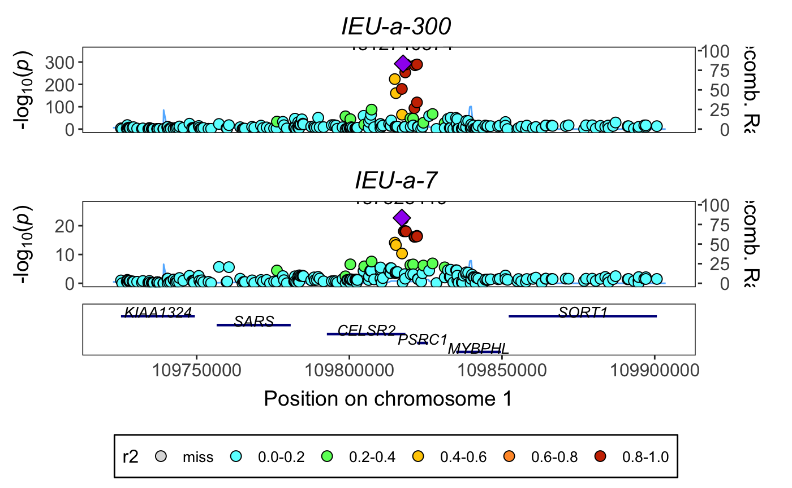

Here we’ll perform colocalisation analysis for a particular region, and plot the regions as well. We’ll do the same analysis two ways:
- querying the association data from the IEU GWAS database, and
- downloading the GWAS VCF files and querying those.
We’ll use the example of LDL cholesterol ieu-a-300 and coronary heart disease ieu-a-7.
Load libraries:
suppressPackageStartupMessages(suppressWarnings({
library(gwasglue)
library(dplyr)
library(gassocplot)
library(coloc)
}))ieugwasr
First find a region that we know to be associated with LDL cholesterol.
top <- ieugwasr::tophits('ieu-a-300') %>% arrange(p)
#> API: public: https://gwas-api.mrcieu.ac.uk/
top
#> # A tibble: 81 x 12
#> position p chr beta n se id rsid ea nea
#> <int> <dbl> <chr> <dbl> <int> <dbl> <chr> <chr> <chr> <chr>
#> 1 1.10e8 1.00e-200 1 -0.150 172825 0.0047 ieu-… rs49… T C
#> 2 4.54e7 1.00e-200 19 -0.485 139198 0.0119 ieu-… rs72… A G
#> 3 1.12e7 1.00e-200 19 -0.221 170608 0.0061 ieu-… rs65… T G
#> 4 2.13e7 9.48e-183 2 0.119 173007 0.004 ieu-… rs13… A G
#> 5 5.55e7 8.57e-143 1 0.497 77417 0.018 ieu-… rs11… A G
#> 6 4.54e7 2.99e-122 19 -0.446 99409 0.0183 ieu-… rs12… A G
#> 7 4.41e7 4.84e- 83 2 -0.0806 172940 0.0041 ieu-… rs65… C T
#> 8 7.47e7 7.79e- 78 5 0.0733 168357 0.0038 ieu-… rs12… C T
#> 9 4.52e7 7.29e- 62 19 -0.189 170260 0.0112 ieu-… rs29… C T
#> 10 1.26e8 2.10e- 50 8 -0.0564 172963 0.0036 ieu-… rs29… T A
#> # … with 71 more rows, and 2 more variables: eaf <chr>, trait <chr>Choose the best signal and create a range
chrpos <- paste0(top$chr[1], ":", top$position[1] - 90000, "-", top$position[1] + 90000)
chrpos
#> [1] "1:109724880-109904880"Extract, harmonise and format the data
out <- ieugwasr_to_coloc(id1='ieu-a-300', id2='ieu-a-7', chrompos=chrpos)Run colocalisation analysis
res <- coloc::coloc.abf(out[[1]], out[[2]])
#> Warning in sdY.est(d$varbeta, d$MAF, d$N): estimating sdY from maf and
#> varbeta, please directly supply sdY if known
#> PP.H0.abf PP.H1.abf PP.H2.abf PP.H3.abf PP.H4.abf
#> 1.31e-304 1.29e-19 3.67e-288 2.61e-03 9.97e-01
#> [1] "PP abf for shared variant: 99.7%"Plot
temp <- coloc_to_gassocplot(out)
#> Extracting LD matrix for 253 variants
#> Warning in ieugwasr::ld_matrix(markers[["marker"]], with_alleles = FALSE, : The following variants are not present in the LD reference panel
#> rs114570757
#> rs115867281
#> rs116711509
#> rs41279710
#> rs41279722
#> rs6683212
#> Found 247 variants in LD reference panel
gassocplot::stack_assoc_plot(temp$markers, temp$z, temp$corr, traits=temp$traits)
#> TableGrob (2 x 1) "arrange": 2 grobs
#> z cells name grob
#> 1 1 (1-1,1-1) arrange gtable[layout]
#> 2 2 (2-2,1-1) arrange gtable[guide-box]gwasvcf
Let’s do the same with the vcf files (and the indexes). Download from here:
- https://gwas.mrcieu.ac.uk/files/ieu-a-300/ieu-a-300.vcf.gz
- https://gwas.mrcieu.ac.uk/files/ieu-a-300/ieu-a-300.vcf.gz.tbi
- https://gwas.mrcieu.ac.uk/files/ieu-a-7/ieu-a-7.vcf.gz
- https://gwas.mrcieu.ac.uk/files/ieu-a-7/ieu-a-7.vcf.gz.tbi
vout <- gwasvcf_to_coloc("ieu-a-300.vcf.gz", "ieu-a-7.vcf.gz", chrpos)
#> Warning: multiple methods tables found for 'type'
#> Warning: replacing previous import 'BiocGenerics::type' by
#> 'DelayedArray::type' when loading 'SummarizedExperiment'
#> 'tools_bcftools' option is not set, using native read which may be substantially slower. See 'set_bcftools' for information.
#> 'tools_bcftools' option is not set, using native read which may be substantially slower. See 'set_bcftools' for information.Run colocalisation analysis
vres <- coloc::coloc.abf(vout[[1]], vout[[2]])
#> Warning in sdY.est(d$varbeta, d$MAF, d$N): estimating sdY from maf and
#> varbeta, please directly supply sdY if known
#> Warning in sdY.est(d$varbeta, d$MAF, d$N): estimating sdY from maf and
#> varbeta, please directly supply sdY if known
#> PP.H0.abf PP.H1.abf PP.H2.abf PP.H3.abf PP.H4.abf
#> 2.54e-304 2.49e-19 3.67e-288 2.61e-03 9.97e-01
#> [1] "PP abf for shared variant: 99.7%"Plot
temp <- coloc_to_gassocplot(vout)
#> Extracting LD matrix for 253 variants
#> Warning in ieugwasr::ld_matrix(markers[["marker"]], with_alleles = FALSE, : The following variants are not present in the LD reference panel
#> rs115867281
#> rs41279710
#> rs41279722
#> rs116711509
#> rs114570757
#> rs6683212
#> Found 247 variants in LD reference panel
gassocplot::stack_assoc_plot(temp$markers, temp$z, temp$corr, traits=temp$traits)
#> TableGrob (2 x 1) "arrange": 2 grobs
#> z cells name grob
#> 1 1 (1-1,1-1) arrange gtable[layout]
#> 2 2 (2-2,1-1) arrange gtable[guide-box]